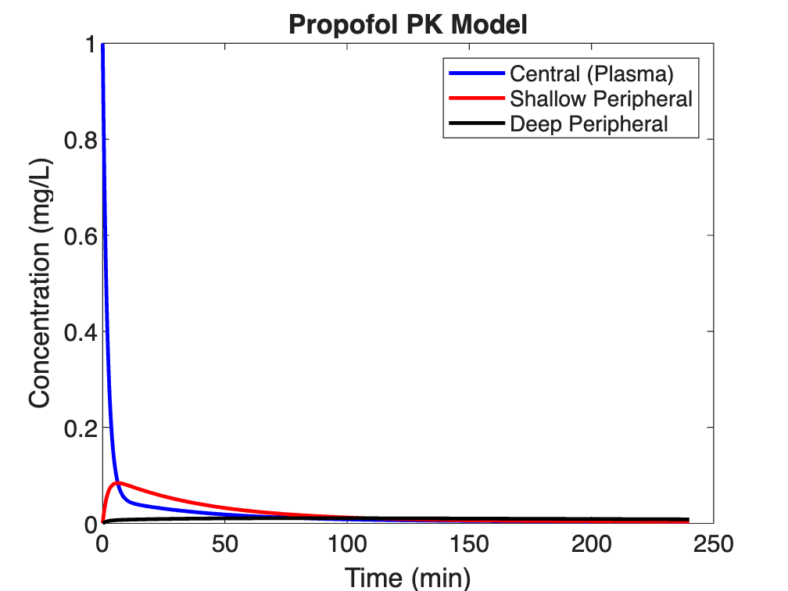
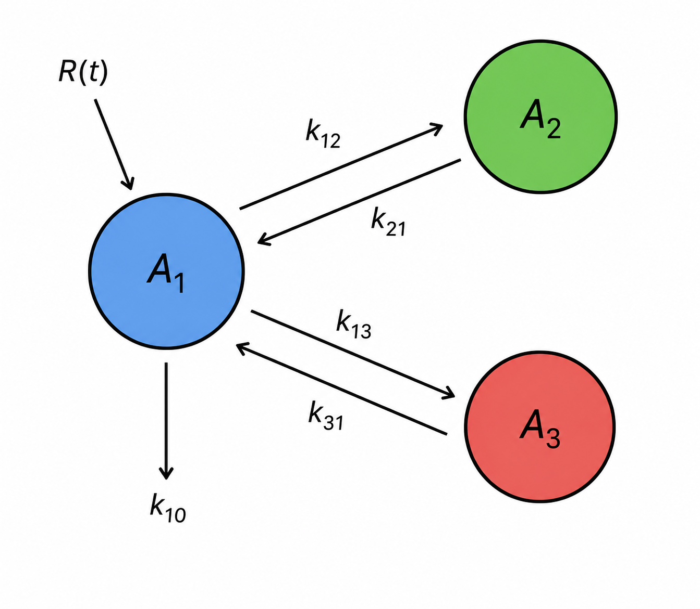
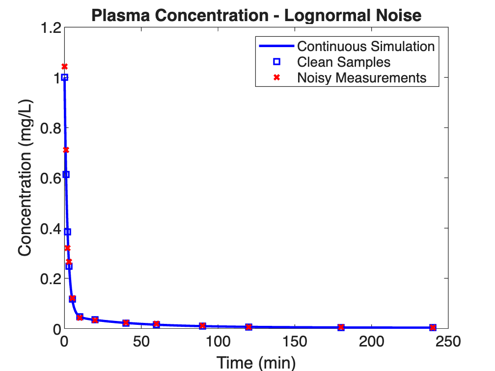

A three-compartment MATLAB simulation of propofol pharmacokinetics using an ODE model, observability and controllability analysis, sampling schedule design, and a lognormal noise model for simulated clinical data.
Propofol's rapid distribution and short duration of action make it well suited to target-controlled infusion, where a computer-driven pump adjusts its rate to hold a specified plasma concentration. That depends on a pharmacokinetic model accurate enough to predict plasma levels between blood draws.
This project implemented the three-compartment model of Schüttler and Ihmsen, a population study of 4,112 plasma samples from 270 patients. Using MATLAB, I simulated a 9.3 mg IV bolus in a 70 kg adult over 240 minutes.
Beyond the simulation, the work tests whether the system is observable from plasma alone, designs a sampling schedule around the drug's three half-lives, and models measurement noise at clinically realistic levels.


Propofol follows a three-compartment structure: central plasma, shallow peripheral tissue such as muscle, and deep adipose tissue where the drug accumulates. Three coupled ODEs in drug mass were solved with ode15s over 240 minutes, with rate constants derived from published clearances and volumes.
Plasma is the only compartment sampled non-invasively, so the model measures the central compartment alone. Symbolic and numerical analysis both returned rank 3 with zero hidden modes, meaning tissue concentrations can be inferred from routine blood draws. Controllability returned rank 3 as well.

Draws were scheduled around the drug's three half-lives: 1.33, 27, and 335 minutes, with thirteen samples from 0 to 240 minutes, spaced one minute apart early to catch rapid distribution. Because HPLC concentrations are strictly positive, measurement error was modeled as lognormal, with the standard deviation taken from the widest measured vs. predicted separation in the source study.
Plasma peaks near 1 mg/L and drops sharply as drug redistributes into the shallow compartment, which peaks at five to ten minutes. The deep compartment rises slowly and stays elevated, reproducing the tissue accumulation typical of anesthetics. With plasma observable, muscle and fat concentrations can be estimated from blood alone representing the logic behind target-controlled infusion.